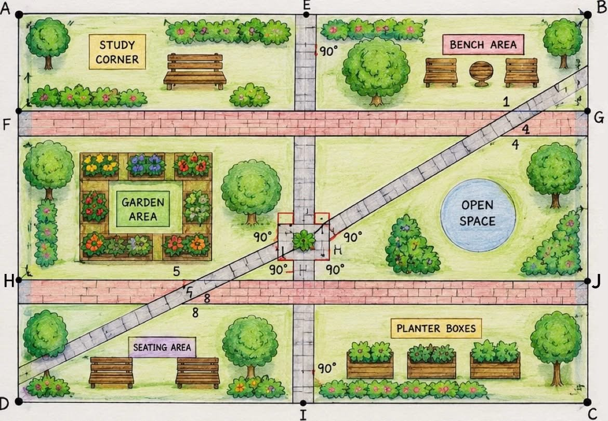

Geometry in Action
Designing a Smarter Campus Space
Introduction:
Welcome, junior campus planners! Your group has been selected by the school administration to help improve and beautify a designated area within the campus. Using the geometric concepts learned in Unit 1, you will create a practical, safe, and visually appealing redesign proposal. This project will allow you to apply geometric constructions, angle relationships, reasoning and proof, and parallel line concepts in an authentic school-based setting.
Your Goal:
To produce a professional report that proposes a redesigned campus space using the geometric concepts learned in Unit 1. The report will include a drawing/design layout, geometric constructions, mathematical justifications or reasoning, and a proof.
- Group Size: 3-4 members
- Total Points: 50 points per student
Driving Question
"Beyond aesthetics, how can the strategic language of geometry solve the unseen problems in our everyday school environment?"
Step-by-Step Instructions
1. Site Inspection and Observation
- Once your group is assigned, or you have chosen a specific area on campus, your first task is to visit the site.
- Observe existing pathways, open spaces, gardens, benches, trees, buildings, and other features.
- Take a picture of the current layout.
- Identify areas that can be improved through a geometric redesign.
2. Planning & Design
As a group, plan how you want to redesign the space. Consider the following:
- Function: What purpose will the redesigned area serve? Examples include:
- A quiet study corner
- An outdoor learning space
- A landscaped garden area
- A safer pedestrian pathway
- A waiting area for students
- Aesthetics: What geometric arrangements would make the space attractive and organized? Examples include:
- Parallel walkways
- Perpendicular pathways
- Symmetrical garden layouts
- Decorative geometric patterns
Elements & Design Requirements
3. Elements
Decide what to include in your design. Examples include:
- Walkways and pathways
- Garden plots
- Benches or seating areas
- Planter boxes
- Signage areas
- Open spaces for student activities
Your proposed campus redesign must demonstrate the geometric concepts learned in Unit 1. For this project:
- Include at least one pair of parallel lines in your design.
- Include at least one pair of perpendicular lines in your design.
- Include at least one transversal intersecting a pair of parallel lines.
- Label at least five points using proper geometric notation.
- Identify and label at least two angle relationships found in your design.
- Clearly indicate the parallel lines, perpendicular lines, transversal, and angle relationships on the visual layout.
3. Creating the Visual Layout
On a piece of Letter-sized or A4 bond paper, create a neat, colorful, and detailed drawing of your proposed campus redesign. Your visual layout should clearly show how the assigned area will look after the improvements have been implemented.
The drawing must:
- Include all proposed features such as pathways, garden areas, benches, planter boxes, signage, open spaces, or other design elements.
- Clearly label each section and important feature using proper geometric notation where applicable.
- Show the required geometric concepts, including parallel lines, perpendicular lines, a transversal, and identified angle relationships.
- Use color, shading, symbols, or patterns to distinguish different areas and improve readability.
- Be neat, organized, visually appealing, and easy to understand.
The visual layout should accurately represent the group's redesign proposal and serve as the primary illustration of how geometric concepts are applied to improve the campus space.
4. Geometric Construction Analysis
On a separate sheet of paper, you will perform and present the following mathematical tasks. You must show your justifications.
Geometric Construction Analysis
Demonstrate the construction of one pair of parallel lines, one pair of perpendicular lines, etc., and explain how these constructions were used in the redesign.
Angle Relationships
Identify and classify the angle pairs found in your design. Examples may include:
- Complementary Angles
- Supplementary Angles
- Vertical Angles
- Adjacent Angles
- Linear Pair Angles
- Corresponding Angles
- Alternate Interior Angles
- Alternate Exterior Angles
- Same-Side Interior Angles
5. Reasoning and Proof
Your group must justify why the assigned campus area needs to be redesigned and explain how your proposed design improves the space. Your report must include:
- A written explanation of the current condition of the area and the problems observed.
- A justification for the proposed redesign using geometric concepts learned in Unit 1.
- Evidence from observations, measurements, or campus needs that support your proposal.
- One mathematical proof supporting a geometric claim found in your design.
Claim: The existing pathway layout causes unnecessary crossing of student traffic during dismissal time.
Evidence: During observation, students coming from the canteen and classroom building frequently crossed paths, creating congestion in the area.
Justification: The redesigned pathway uses parallel walkways and a perpendicular connector path to improve movement and reduce congestion. The arrangement provides clearer directions and safer pedestrian flow.
Proof/Support: The proposed pathway intersects the main walkway at a right angle, creating a clearer and more organized route for pedestrian traffic. Therefore, m∠1 = m∠2 = m∠3 = m∠4 = 90°. The layout shows EF ⊥ GH, and the measured angles are all 90°, supporting the claim that the pathways form perpendicular lines.
Documentation: Photo showing students crossing an open area without a designated pathway.
Final Report Assembly:
Compile all parts into a single, neat report containing:
- A Title Page (Project Title, Group Members, Section)
- The Campus Redesign Visual Layout
- The Geometric Construction Sheet
- The Reasoning and Proof Sheet w/ Reflection
6. Reflection: I Used to Think... Now I Think...
Instructions: At the end of the project, reflect on how your understanding of geometry has changed. Complete the statements below using your own experiences and learning from the Campus Redesign Project using 3 - 5 sentences each.
1. I used to think
2. Now I think
Pointing System for Performance Task #1
A. GROUP GRADE (30 Points)
Assesses the quality of the group's collective output and collaboration in producing the final project.
| Criteria | 5 Points | 4 Points | 3 Points | 2 Points |
|---|---|---|---|---|
| Application of Geometric Concepts | All required geometric concepts are correctly represented, labeled, and integrated into the design. | Most concepts are correctly represented with minor errors. | Some concepts are represented but with noticeable errors or omissions. | Few required concepts are present or correctly shown. |
| Accuracy of Mathematical Content | Geometric relationships, labels, and representations are mathematically accurate throughout the project. | Minor mathematical inaccuracies are present. | Several inaccuracies affect clarity or correctness. | Major inaccuracies are evident throughout the project. |
| Creativity and Practicality of Design | Design is highly creative, realistic, and effectively addresses the needs of the campus area. | Design is practical and shows some creativity. | Design addresses the need but lacks originality or practicality. | Design is unrealistic, unclear, or does not adequately address the identified need. |
| Visual Organization and Presentation | The layout is exceptionally neat, organized, visually appealing, and easy to interpret. | The layout is organized and readable with minor issues. | The layout is somewhat disorganized or difficult to follow. | The layout is poorly organized and difficult to understand. |
| Completeness of Required Components | All required components and project requirements are fully completed. | One minor requirement is missing or incomplete. | Multiple requirements are incomplete. | Several major requirements are missing. |
| Quality of Group Collaboration and Preparation | Evidence of strong teamwork, shared responsibility, and thorough preparation is clearly demonstrated. | Most members contributed and preparation is evident. | Uneven participation or limited preparation is evident. | Little evidence of collaboration or preparation. |
B. INDIVIDUAL GRADE
1. Proposed Campus Redesign Visual Layout (20 Points)
| Criteria | 5 Points | 4 Points | 3 Points | 2 Points |
|---|---|---|---|---|
| Completeness of Design Features | All required features and labels are included. | One minor feature missing. | Several features are missing. | Many required features are missing. |
| Use of Geometric Concepts | Points, parallel lines, perpendicular lines, transversal, and angle relationships are correctly represented and labeled. | Minor labeling or representation errors. | Some concepts are incorrectly shown. | Concepts largely absent or incorrect. |
| Neatness and Visual Presentation | The layout is exceptionally neat, colorful, and easy to understand. | Generally neat and readable. | Somewhat cluttered or difficult to read. | Poorly organized and difficult to interpret. |
| Accuracy of Geometric Notation and Labels | All points, lines, and angles are correctly labeled using proper notation. | Minor notation errors. | Several notation errors. | Labels are mostly missing or incorrect. |
B. INDIVIDUAL GRADE
2. Geometric Construction Analysis (20 Points)
| Criteria | 5 Points | 4 Points | 3 Points | 2 Points |
|---|---|---|---|---|
| Construction of Points and Parallel Lines | Construction is correct and clearly explained. | Minor procedural errors. | Incomplete explanation. | Incorrect or missing construction. |
| Construction of Perpendicular Lines | Construction is correct and clearly explained. | Minor procedural errors. | Incomplete explanation. | Incorrect or missing construction. |
| Connection of Constructions to Design | Clearly explains how constructions were applied in the redesign. | The explanation is mostly clear. | Limited connection made. | No meaningful connection. |
| Mathematical Accuracy and Justification | All explanations demonstrate correct geometric reasoning. | Minor reasoning errors. | Several reasoning errors. | Reasoning is largely incorrect or absent. |
B. INDIVIDUAL GRADE
3. Reasoning and Proof (20 Points)
| Criteria | 5 Points | 4 Points | 3 Points | 2 Points |
|---|---|---|---|---|
| Identification of Problem and Need for Redesign | Clearly identifies observed issues and supports them with evidence. | Issues identified with adequate support. | Limited evidence provided. | Issues poorly identified or unsupported. |
| Justification of Proposed Design | Strong explanation of how the redesign improves the area using geometric concepts. | Adequate explanation with minor gaps. | The explanation lacks detail. | Justification is weak or absent. |
| Mathematical Proof | Proof is complete, logical, and mathematically correct. | Minor errors that do not affect overall validity. | Significant gaps in reasoning. | Proof is incomplete or incorrect. |
| Use of Evidence and Reasoning | Observations, measurements, and geometric reasoning strongly support claims. | Evidence generally supports claims. | Limited supporting evidence. | Little or no supporting evidence. |
SAMPLE VISUAL LAYOUT
Your layout should clearly map out zones using geometric lines, transversal pathways, and properly denoted angles just like the sample below.

Good Luck, Junior Planners!
Apply your Geometry skills to build a better campus.